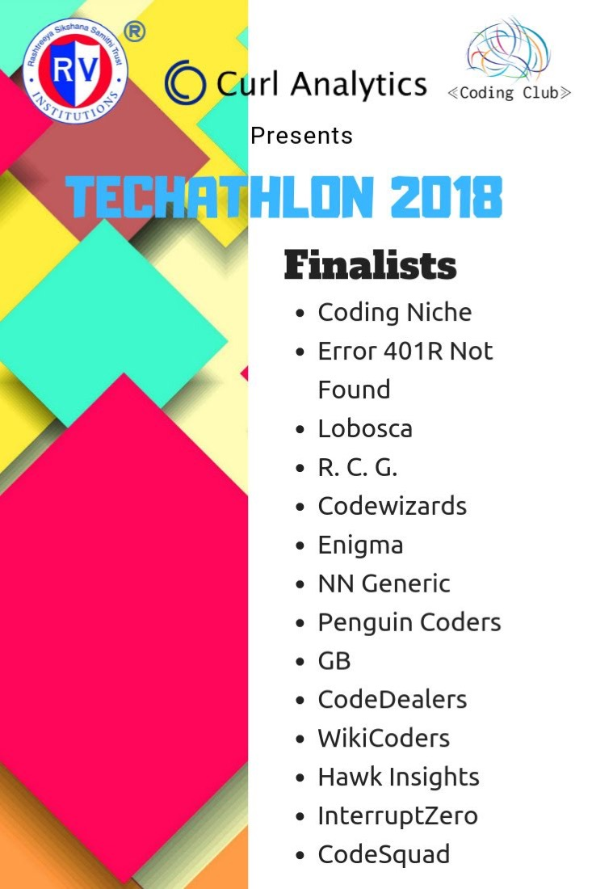
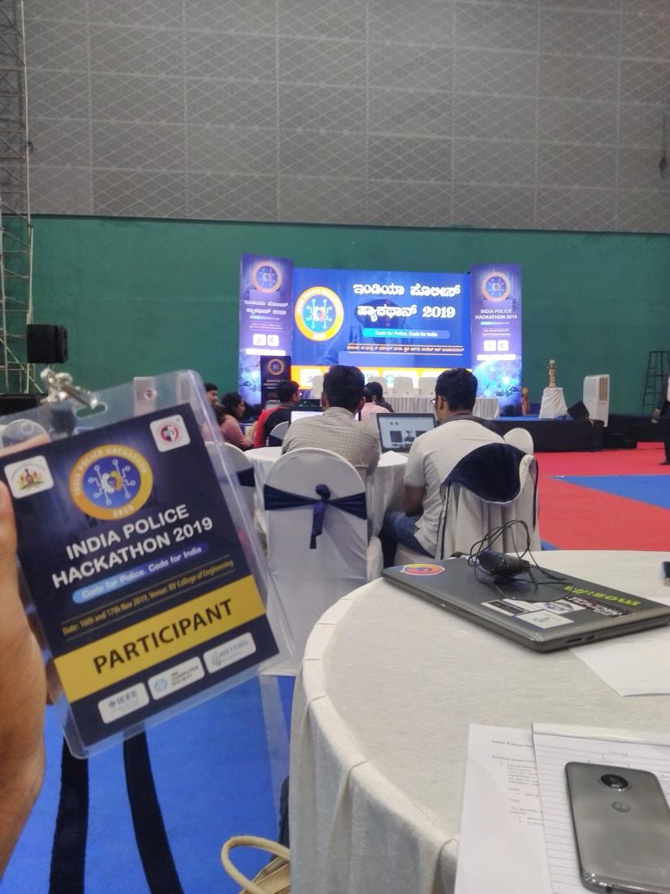
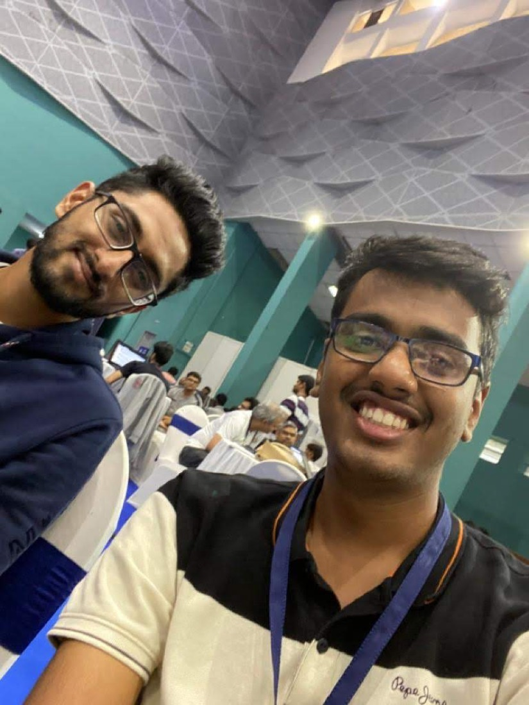

Techathlon 2018, RVCE · India Police Hackathon 2019, Karnataka State Police
The two we didn't win
Finalist twice, winner neither time. They are also, awkwardly, the two projects with the most surviving code and the most ambitious problems in the whole run.
Six of the eight competitions in this archive ended with a cheque. These two did not. We made the finals at both and went home with neither, and they bracket the whole run: the first arrived three weeks before inGenius, the last a year after it.
They are also the two with the most code still online, and the two hardest problems anyone set us. Those facts are probably related.
01Techathlon 2018: potholes out of a point cloud
Techathlon was run at RVCE in October 2018 by the Coding Club with Curl Analytics. The problem was pothole detection, and what made it unusual was the data: not photographs of roads, but LIDAR point clouds captured from a drone, with matching GPS and IMU logs.
The approach, as recorded in the repository, was geometric rather than learned. Pull the x values out of the point cloud per timestamp into a timestamp-to-position array, then walk consecutive values and flag anywhere the step between them exceeds a threshold. A road surface that is behaving itself produces small, regular deltas, and a pothole does not. Separately, take the intensity channel, compute its mean across the scan, and use that mean as its own threshold: returns above it read as worn or muddy surface, below it as flat and sound. Count what the two filters agree on. Then join the flagged timestamps back against the GPS log to recover latitude and longitude, and plot the results on a map, which is the form a road authority could actually use. Alongside that ran a more conventional computer vision pass over road imagery, using thresholding and Canny edge detection.
The README is candid that the IMU logs, which carry the drone's acceleration, were never used and would probably have improved it. That is true, and it is the kind of thing you notice at hour twenty-two and do not have time to act on.
The copy on my account is a fork of mahadev9/Techathlon, which is Mahadev's repository, not mine. The result images are hosted in his copy. I am linking it as a fork because that is what it is.

02India Police Hackathon 2019: faces
Thirteen months later, on the 16th and 17th of November 2019, the India Police Hackathon ran under the slogan "Code for Police, Code for India", put on by Karnataka State Police with IEEE and the IEEE Computer Society. The venue was RV College of Engineering, which is to say we did not have to travel. We were table 15, which is how the repository got its name.
The problem was missing persons. Given photographs submitted to the police by families, search them against police image databases and surface likely matches.
This is the most-starred repository of my college years, at a grand total of four stars, and the most sprawling thing in this archive. It reads like four people who did not agree on an approach and so built all of them:
- An OpenCV pipeline to detect and crop faces out of submitted images and normalise the filenames.
- LBPH and HOG feature extraction, plus CNN embeddings compared by Hamming distance to rank candidates.
- A VP-tree index, because linear scan over a police-scale database is not a plan.
- A live CCTV monitor that assembled its own searchable database from a feed.
- A social media mapper hitting Facebook's APIs, rendered through Django.
- An Android client talking over OKHTTP to a Flask server running the matcher, which returned an identifier or the string
unknown.
Six things. In twenty-four hours. No single one of them finished, which is the most predictable sentence in this entire archive.

One thing does deserve saying plainly from 2026, because it would be strange not to. The framing was missing persons and family reunification, which is about as sympathetic as a brief gets. The machinery underneath is the same machinery regardless of what it is pointed at: face matching at scale against police databases, fed by live CCTV, cross-referenced with social media profiles. A great deal has been learned since 2019 about how these systems fail, who they fail, and how quickly a humanitarian deployment becomes a general one. We did not discuss any of that over those twenty-four hours. It did not come up, from us or from anyone else in the hall.

03What the two have in common
Both problems were considerably bigger than the time allowed. Both were attacked by building several approaches in parallel rather than choosing one and finishing it. And both times we made the final and lost it.
At inGenius the same hedging instinct worked, because there the fallback was small: two models for one clearly defined task, and either would have done. At Techathlon and at the police hackathon the hedge was across entire subsystems, and what you get from that is six halves. A judge cannot score an intention.
Breadth is what you reach for when you do not know which part is hard yet. It stops paying the moment you do know, and the hard part is noticing that the moment has passed.
04The name on the poster
One last thing, which is the reason I wanted these two in the same post.
Look again at the Techathlon finalists board, October 2018. Between Hawk Insights and CodeSquad: InterruptZero. It is on the Polaroid from inGenius a month later, written by hand as "Interrupt 0". It is written again on the GE Healthcare cheque at SLAC the following March.
Eight years later I entered the AWS AI League at Cisco under the handle InterruptZero, and won it. The alias has outlasted every project it was attached to, two of which are on this page, neither of which won anything at all.